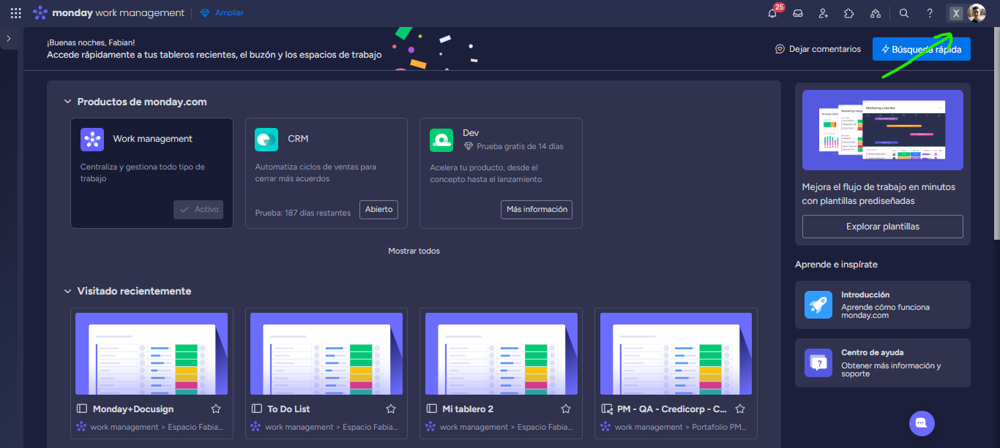
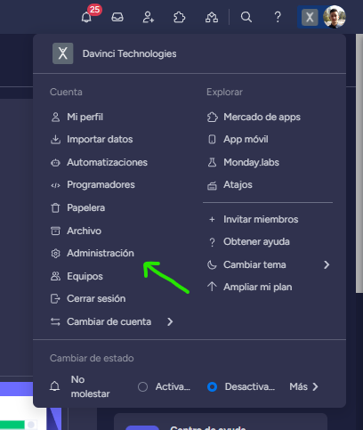
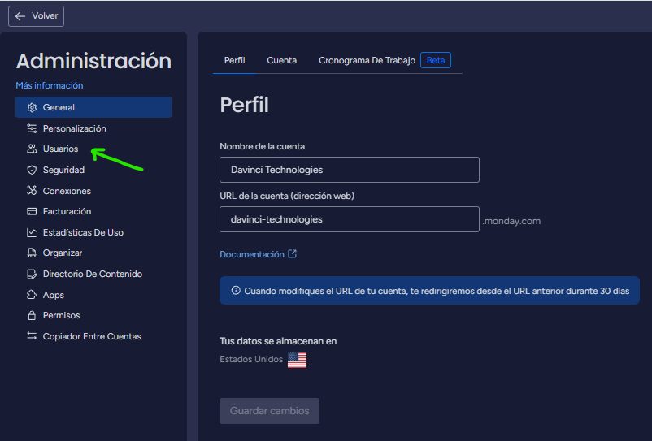
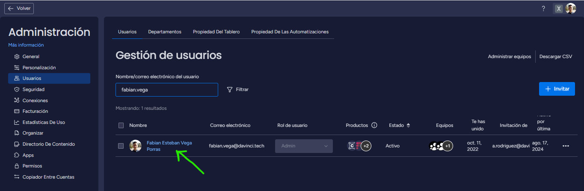
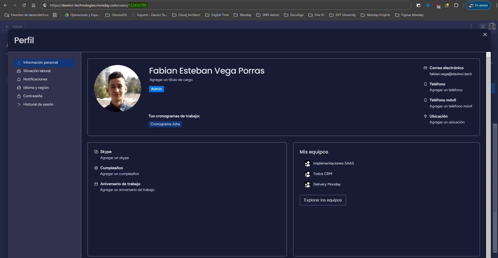
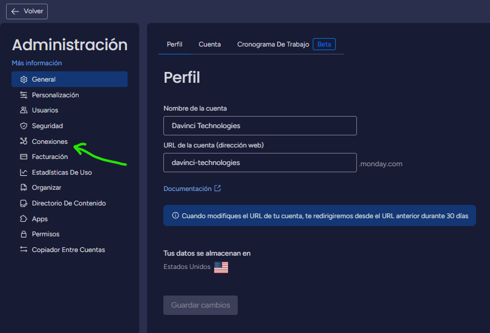
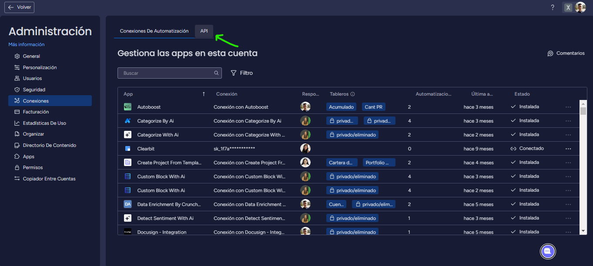
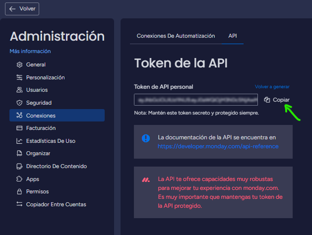

• Definir el UserID en monday.com
Paso 1. Ingresar a la sección de Administración
Para poder obtener el UserID de monday.com, nos dirigimos a la parte superior derecha donde se encuentra nuestro perfil, y luego buscamos la sección nombrada "Administración".
 Paso 2. Ir a la Gestión de Usuarios
Una vez nos encontremos en el Panel de Administración debemos ubicar la sección "Usuarios" que se encuentra en la parte izquierda y le damos clic.
Paso 3. Obtener el UserID del usuario seleccionado
Desde el panel de Gestión de Usuarios se debe seleccionar el usuario con el cual se configurará la integración. Una vez este seleccionado el usuario, le daremos clic a su nombre y en el URL del navegador encontraremos el UserID requerido para la integración.
 • Definir el token de la API en monday.com
Paso 1. Ingresar a la sección de Administración
Para poder obtener el token de la API de monday.com, nos dirigimos a la parte superior derecha donde se encuentra nuestro perfil, y luego buscamos la sección nombrada "Administración".
Paso 2. Ir a la Gestión de Conexiones
Una vez nos encontremos en el Panel de Administración debemos ubicar la sección "Conexiones" que se encuentra en la parte izquierda y le damos clic.
Paso 3. Obtener el token de la API
Desde el panel de Gestión de Conexiones se debe pasar a la sección de la API, desde esta visual encontraremos el token de la API y podremos copiarlo para anexarlo en la configuración de la integración.
 